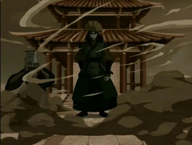
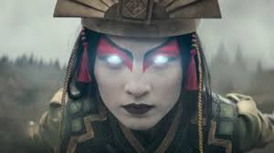
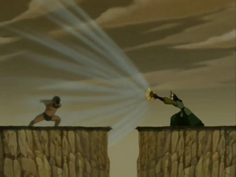
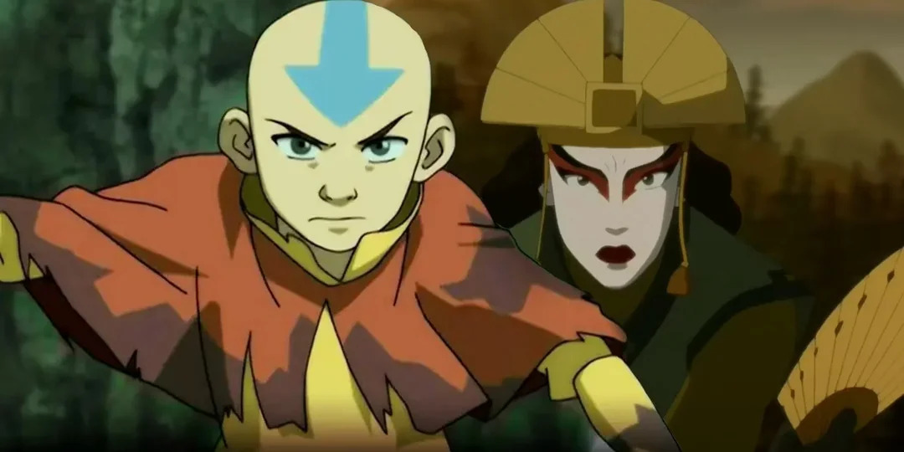

NEXVERSE
Aang stopped Tagah from destroying the ships. Kyoshi? She probably would’ve helped him aim better.

When Aang stopped Tagah from crushing those ships in the new Avatar movie, a lot of people saw it as heroic.
Classic Aang.
Protect everyone. Save lives. Avoid destruction whenever possible.
But the second that scene ended, one thought immediately came to mind:
And honestly? That’s what makes Avatar history so interesting.
Aang and Kyoshi represent two completely different philosophies.

Aang always believed violence should be the last option.
Even against dangerous people, he hesitated. He always searched for another way.
That compassion is what defines him.
Kyoshi?
Kyoshi believed peace sometimes required force.
Not speeches. Not chances. Force.
This is literally the same Avatar who split land itself to stop a tyrant.
If a threat needed to disappear, Kyoshi wasn’t going to sit around debating morality for three business days 😭

That’s why the ship scene becomes hilarious to compare.
Aang sees lives that can still be saved.
Kyoshi probably sees armed enemies causing destruction and thinks:
“Why are we still talking?”
This is where Avatar debates become dangerous.
Because as much as people admire Aang’s morality, there are situations where Kyoshi’s mindset honestly seems more effective.
Aang inspires people.
Kyoshi ends problems.
And depending on the enemy… one approach works a LOT faster.

Aang stopping Tagah fits his character perfectly.
But pretending every Avatar would’ve done the same thing?
Absolutely not.
Kyoshi would’ve looked at those ships…
…and there’s a very real chance she would’ve crushed them herself.